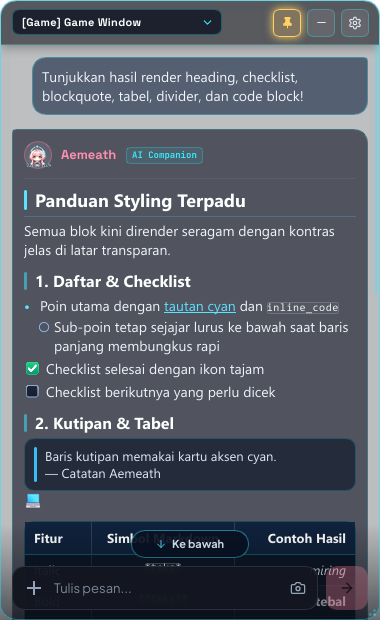
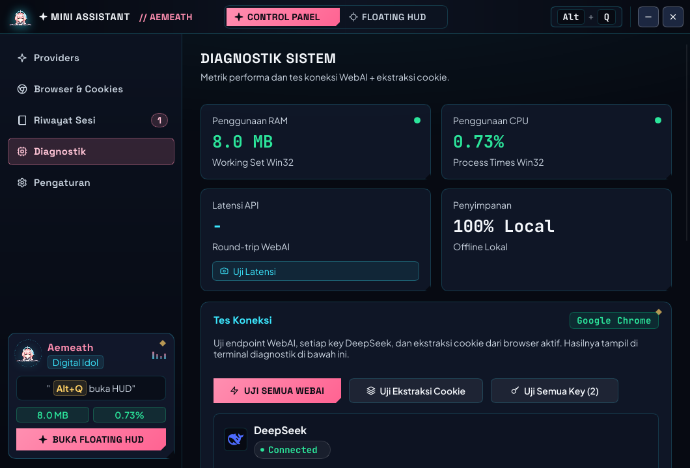
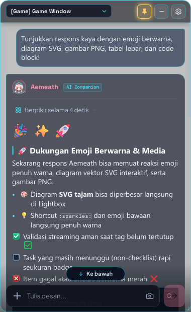
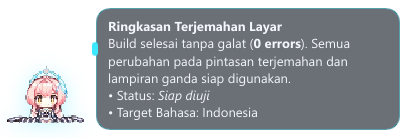
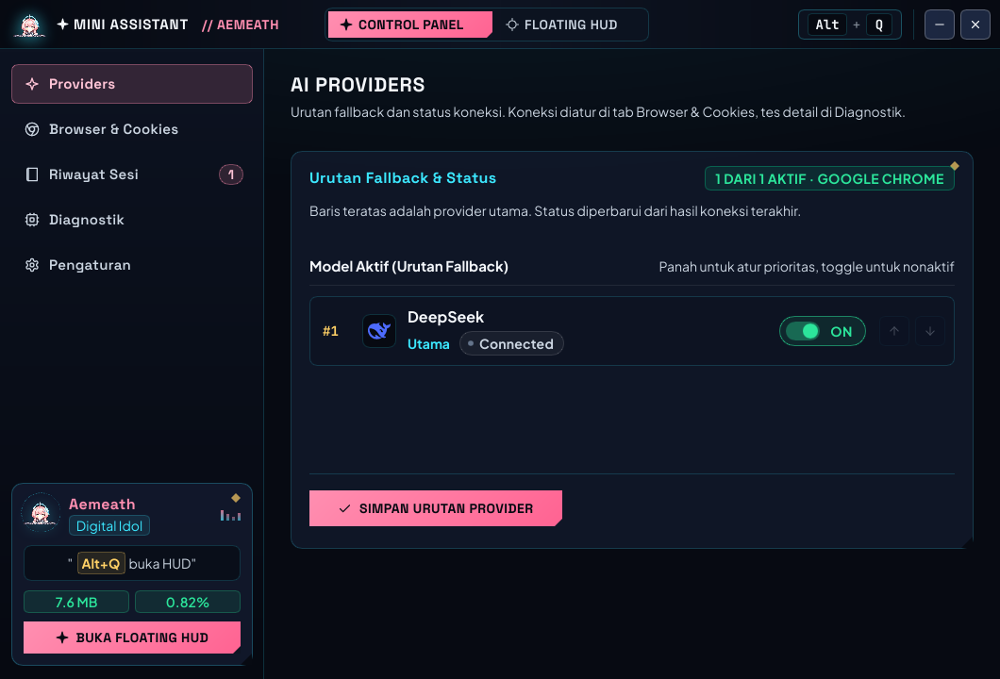
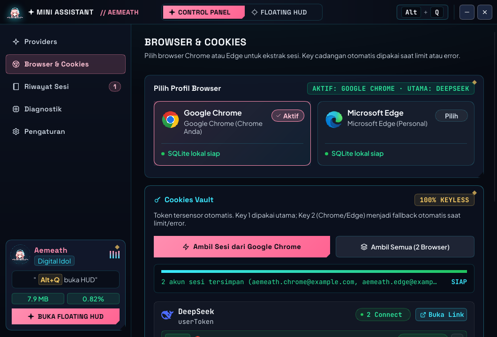
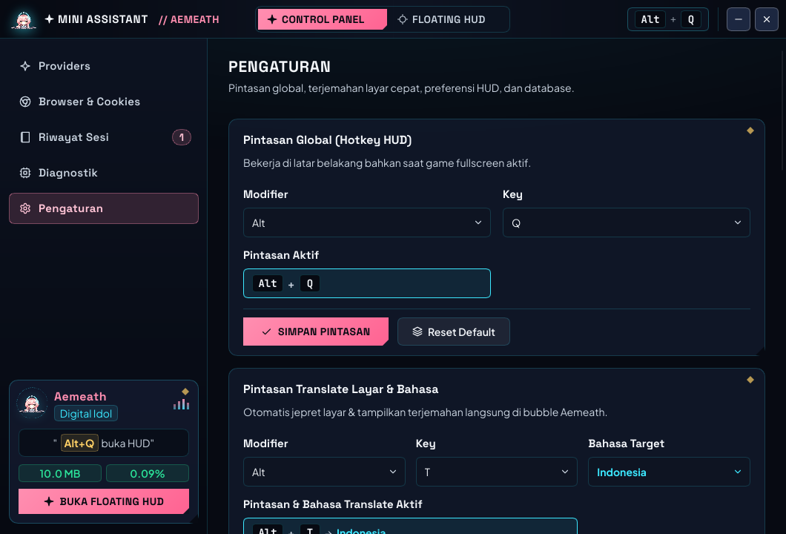

FLOATING HUD
Floating HUD & Rich Markdown
Overlay kaca Acrylic di atas game dengan heading, checklist, blockquote cyan, tabel, dan code block siap salin.
Companion AI desktop native untuk Windows dengan tema Startorch Academy × Aemeath. Hadir dalam 1 file portable (UI + Embedded API Server), overlay HUD kaca Acrylic di atas game, Translate This Screen, Vision, dan konsumsi RAM serendah 3,5 MB.

Diukur langsung dari binary portable rilis MiniAssistant.exe (gabungan UI Slint + Server API Axum dalam 1 proses tunggal pada Windows 12-core). Tanpa Chromium, tanpa WebView2, dan dilengkapi pemangkasan memori otomatis.
Tab Diagnostik Sistem dan sidebar membaca pemakaian proses nyata langsung melalui Win32 API (GetProcessMemoryInfo & GetProcessTimes) setiap 3 detik.

Klik untuk ZoomSeluruh tangkapan layar diambil langsung dari build release Windows (tanpa mockup). Klik gambar mana pun untuk melihat detail resolusi penuh.
Overlay kaca Acrylic di atas game dengan heading, checklist, blockquote cyan, tabel, dan code block siap salin.

Chip "Berpikir selama N detik", emoji berwarna Direct2D/COLRv1, diagram SVG interaktif, serta zoom lightbox.

Terjemahkan jendela aktif langsung ke speech bubble Aemeath lewat Alt+T tanpa membuka jendela HUD penuh.
Aemeath bernyanyi dengan sprite animasi, not musik vektor pink-cyan, dan audio jernih WASAPI saat Bubble idle.

Manajemen provider aktif, status koneksi live, serta kartu status Aemeath di sidebar lengkap dengan RAM & CPU.

Ekstraksi sesi LevelDB otomatis dari Chrome & Edge dengan Priority-First Key Pool dan auto-failover.
Kartu metrik live Penggunaan RAM (8.0 MB), Penggunaan CPU, Latensi API, 100% Local, plus uji koneksi terisolasi per-key.

Kustomisasi pintasan global HUD, Translate Layar & bahasa target, preferensi Random Singing, serta Guard RAM ≥ 85%.
Dirancang khusus sebagai companion harian maupun overlay di atas game borderless — cepat dipanggil, kaya format, dan 100% tersimpan lokal.
Panggil overlay kaca DWM Acrylic secara instan dengan hotkey global. Judul & kategori sesi otomatis mengikuti jendela aktif seperti [Game] atau [Dev].
Tekan Alt+T untuk menangkap jendela aktif (otomatis menyembunyikan HUD) dan menerjemahkan teks layar ke speech bubble. Mendukung memori gambar antar-turn.
Ekstraksi token sesi otomatis dari LevelDB Chrome & Microsoft Edge lengkap dengan verifikasi live, Priority-First Key Pool, dan failover otomatis saat limit.
Menampilkan penalaran model (Berpikir selama N detik), sitasi pencarian web interaktif, tabel lebar, blok kode siap salin, emoji Direct2D, dan SVG lightbox.
Saat Bubble idle, Aemeath dapat bernyanyi dengan sprite animasi, not musik ♪♫, dan audio jernih Media Foundation + WASAPI — otomatis berhenti saat RAM ≥ 85%.
Tanpa skrip .bat, tanpa jendela CMD/terminal, tanpa installer. Cukup klik ganda MiniAssistant.exe — server API menyala in-process dan data tersimpan di folder data/.
Fitur ganti bahasa langsung di dalam aplikasi desktop (Bahasa Indonesia & English) serta perluasan dukungan provider modular sedang disiapkan untuk rilis mendatang.
Satu basis kode Rust yang melayani dua kebutuhan: paket single-binary ultra-ringkas untuk pengguna akhir, serta 3 crate modular terpisah untuk pengembangan cepat.
Server API Axum tertanam in-process pada Tokio runtime yang sama — 0 terminal, 0 proses yatim, boot instan.
MiniAssistant.exeSlint UI + Embedded Axum API (15.54 MB)./assets/42 file sprite Aemeath, logo & musik (1.68 MB)./data/mini_assistant.db + accounts.json + cacheSetiap lapisan memiliki tanggung jawab tegas dan unit test mandiri (70+ automated tests + 32 interactive UI tests).
ui-native/Slint UI (HUD, Bubble, Panel) + Win32/WASAPIapp-core/LevelDB/Cookie, SQLite, Capture, Hotkey, Metricsbackend-api-ai/Standalone API Server (PoW, SSE, Vision, Pool)Tidak perlu instalasi rumit. Ekstrak ZIP lalu klik ganda, atau kompilasi langsung memakai Cargo di Windows.
Unduh Mini-Assistant-Portable.zip (9.59 MB) dari halaman GitHub Releases lalu ekstrak ke folder pilihan Anda.
Floating HUD & API Server langsung aktif otomatis tanpa terminal dan tanpa perlu file .bat.
Buka Pengaturan → Browser & Cookies lalu klik "Ambil Semua Browser" untuk langsung mulai chat & vision.
# 1. Clone repository git clone https://github.com/f4rdani/Mini-Assistant.git cd Mini-Assistant # 2. Build paket portable lengkap (MiniAssistant.exe + ZIP) powershell -ExecutionPolicy Bypass -File .\scripts\build-portable.ps1
# Mode Development Modular (API & UI terpisah) # Terminal 1 — Provider API cargo run --release --manifest-path backend-api-ai/Cargo.toml # Terminal 2 — Native Slint UI cargo run --manifest-path ui-native/Cargo.toml